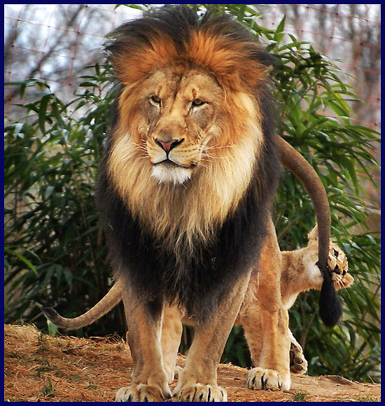
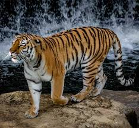

사자(獅子, lion)는 식육목 고양이과 표범속으로 분류되는 포유동물이다. 현존하는 고양잇과 동물 중에서 호랑이에 이어 두 번째로 큰 종이다. 사자는 흔히 백수(百獸)의 왕으로 불리며, 고양잇과 동물 가운데 사자만이 무리를 지어 산다. 사자무리를 ‘프라이드’라고 하는데 한 마리의 수컷이 여러 암컷들을 거느리고 다니는 습성으로 인하여 수사자는 동서고금 가리지 않고 왕권의 상징으로 사용되어 왔다.

호랑이(虎狼-) 또는 범은 고양이과에 속하는 맹수이다. 어린 개체는 개호주라 부른다. 고양이과 동물중 그 크기가 가장 크며, 재규어를 제외하면 유일하게 수영을 할 수 있다. (단, 재규어같은 경우에는 단지 사냥을 목적으로 수영을 할뿐 호랑이처럼 주기적으로 물에 들어가지는 않는다). 호랑이의 크기는 아종에 따라 다양한데, 발리호랑이는 대개 100kg 미만이며, 아무르호랑이는 수컷의경우 최대 360kg에 이르기도 한다. 대개 황갈색 바탕에 검은색 줄무늬가 있다. 드물게 흰색을 띤 백호가 있는데, 이는 백색증과 무관한 열성유전자가 발현되어 나타나는 것이다. 뼈를 비롯한 신체의 거의 대부분의 부위가 한약재로 쓰이고 있으며, 그로인해 심각한 생존의 위협을 받고있다.